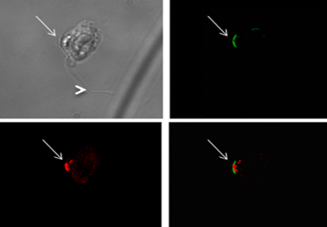

Cell Biology and Evolutionary Ancestry of a Fungal Eye Organelle
Blastocladiomycota possess a unique eye-spot organelle arranged next to the chytrid zoospore flagellum and composed of a unique rhodopsin gene fusion protein and lipid filled vesicles. This system controls how the zoospore responds to light and initiates swimming behaviour. The rhodopsin gene fusion has been adopted as a key tool for optogenetics allowing the construction of synthetic systems to control tissue/cell specific action potential generation. We continue to work with Suely Gomes to understand how the Blastocladiomycota eye-spot functions, the wider proteome that allows the assembly of this organelle and how this system evolved.

Optogenetics work making use of our discovery in Blastocladiella
- Gao S, Nagpal J, Schneider MW, Kozjak-Pavlovic V, Nagel G, Gottschalk A. 2015. Optogenetic manipulation of cGMP in cells and animals by the tightly light-regulated guanylyl-cyclase opsin CyclOp. Nature Comm. 6:8046. https://doi.org/10.1038/ncomms9046
- Kumar RP, Morehouse BR, Fofana J, Trieu MM, Zhou DH, Lorenz MO, Oprian DD. 2017. Structure and monomer/dimer equilibrium for the guanylyl cyclase domain of the optogenetics protein RhoGC. J. Biol. Chem. 292:21578-21589. https://doi.org/10.1074/jbc.M117.812685
- Scheib U, Stehfest K, Gee CE, Körschen HG, Fudim R, Oertner TG, Hegemann P. 2015. The rhodopsin–guanylyl cyclase of the aquatic fungus Blastocladiella emersonii enables fast optical control of cGMP signaling. Science Signaling 8:rs8. https://doi.org/10.1126/scisignal.aab0611
- Trieu MM, Devine EL, Lamarche LB, Ammerman AE, Greco JA, Birge RR, Theobald DL, Oprian DD. 2017. Expression, purification, and spectral tuning of RhoGC, a retinylidene/guanylyl cyclase fusion protein and optogenetics tool from the aquatic fungus Blastocladiella emersonii. J. Biol. Chem. 292:10379-10389. https://doi.org/10.1074/jbc.M117.789636
- Brunet T, Larson BT, Linden TA, Vermeij MJA, McDonald K, King N. 2019. Light-regulated collective contractility in a multicellular choanoflagellate. Science 366:326. https://doi.org/10.1126/science.aay2346
Examples of our work in this area:
- * Avelar GM, Glaser T, Leonard G, Richards TA, Ulrich H, Gomes SL. 2015. A cyclic GMP-dependent K+ channel in the blastocladiomycete fungus Blastocladiella emersonii. Eukaryotic Cell 14:958-963. https://doi.org/10.1128/EC.00087-15
- * Avelar GM, Schumacher RI, Zaini PA, Leonard G, Richards TA, Gomes SL. 2014. A rhodopsin-guanylyl cyclase gene fusion functions in visual perception in a fungus. Current Biology 24:1234-1240. https://doi.org/10.1016/j.cub.2014.04.009
- Richards TA, Gomes SL. 2015. Protistology: How to build a microbial eye. Nature 523:166-167. https://doi.org/10.1038/nature14630
Sequencing Projects:
Genome Paper
- Leonard G, Galindo LJ, Milner DS, Avelar GM, Gomes-Vieira AL, Gomes SL, Richards TA. 2022. A genome sequence assembly of the phototactic and optogenetic model fungus Blastocladiella emersonii reveals a diversified nucleotide-cyclase repertoire. Genome Biol. Evol. 14:evac157. https://doi.org/10.1093/gbe/evac157